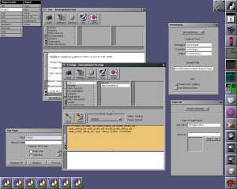

ProjectCenter
ProjectCenter
ProjectCenter is GNUstep's integrated developement environment (IDE). On this page we would like to present this application and its great features in a more detailed way.
The original author of ProjectCenter is Philippe C.D. Robert. The current maintainer of the project is Serg Stoyan. Please contact Serg if you would like to volunteer to extend ProjectCenter or submit bug reports.
Contents
Introduction
State
Documentation
How to get ProjectCenter
Related links
Introduction
Several years ago, NeXT Computer Inc. revolutionized application developing by making two great developer tools available for their operation system OPENSTEP: Project Builder and Interface Builder (which are also available for Mac OS X nowadays). These applications made application developing a lot easier and faster and took NeXT ahead of the other computer manifactuers and operating system vendors.
As you may already know, GNUstep complies to the OpenStep API and is based upon the design and interface philosophy seen on the NeXT platform.
ProjectCenter is meant to be the counter part to NeXT's Project Builder. Thus, it helps you to start new projects and lets you manage your project files using a intuitive and well ordered graphical user interface.
Supporting the project types Application, Bundle, GormApplication, Library and Tool this great application automatically creates the project makefiles and aids you in the process of editing, project compilation, package building and debugging. In the future, built-in CVS support will be available, too.


State
ProjectCenter is already a useable application, but still evolving. Support is there for project creation and inspection as well as basic Makefile generation. Using the GormApplication project type, you can already create graphical applications using ProjectCenter and Gorm in conjunction.
Documentation
For installation help, please refer to the INSTALL file included in the ProjectCenter package or the GNUstep Build Guide.
Philippe started to put together a list of Frequently Asked Questions (FAQ).
If you want to jump in development using ProjectCenter and Gorm you should read Pierre-Yves Rivaille's excellent tutorial on Gorm and ProjectCenter (translations: German).
How to get ProjectCenter
The ProjectCenter sources can be downloaded from our ftp server.
You can also get ProjectCenter using GNUstep's public CVS (module dev-apps). Please see the GNUstep project page for more information.
Related links
GNUstep Tutorials on Makefiles, base and gui programming and more.
GNUstep Library Suite: Reference about the different GNUstep libraries.